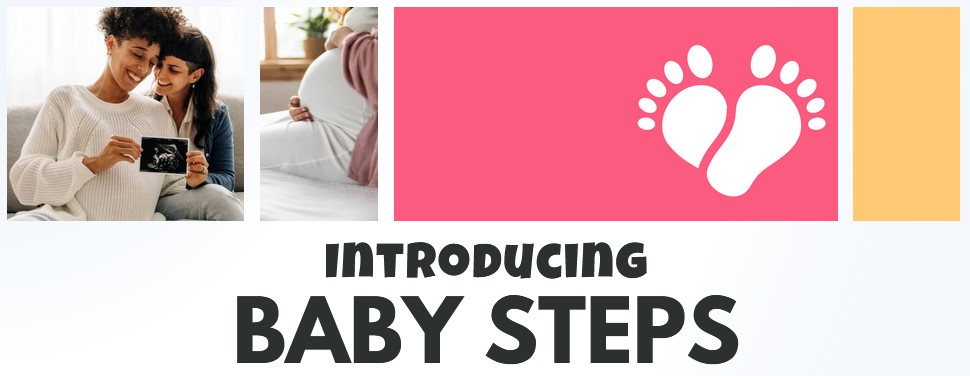

Baby Steps Mobile App Prototype
Graduate Coursework · Team Project · Spring 2025
I led the market research phase to identify gaps in postpartum support, informing our team's user personas and initial ideation. I ensured all health content was accessible and empathetic while contributing to the iterative prototyping process in Figma to streamline the user journey.